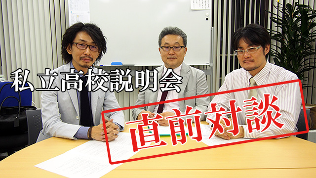
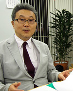
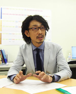
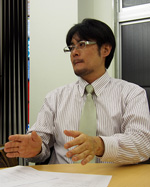

教育研究所ARCS一大イベント「私立高校説明会2015～厳選15校を大解剖～」がいよいよ迫ってまいりました。これまで学習塾クセジュが25年以上開催してきた私立高校説明会ですが、昨年はARCS・クセジュ共催、今年はいよいよARCS主催で開催いたします。（昨年の様子は「私立高校説明会報告対談～舞台裏のウラ側～」をご覧ください）
さて今月26日（土）に迫った私立高校説明会ですが、本日は講師陣3名に本会の見どころを聞いてきました！

事務：塾クセジュ時代から長い歴史のある「私立高校説明会」ですが、どんな会なのですか。そして他とはどんな違いが…

管野：従来の「高校説明会」というのはいくつかの私立高校が自らの宣伝をするために開く場合と、塾の団体などが主催するのが普通でしたが、ご存知のようにこれだと高校側の一方的な情報であって受験する側（生徒や親）が本当に知りたい内容は聞くことができません。事務：学校側の都合の良い話しか聞けないわけですね。
管野：その通りです。たとえばどの学校も「ウチは大学合格者が○○名です」とか「現役合格は○○パーセントです」と言うわけですが、では実際に何人受けて何人受かったのか、実数を明らかにしていません。具体的に言うと、早稲田なら早稲田に10人受かったと言っても１ 人で２つか３つの学部に受かっていたら、早大合格３名とカウントするので、合格者10人と言いながら実際は３〜４人しか受かっていなかったりします。
現役合格が多いと言っても各種学校（専門学校）なども含めてのことが多いので要注意です。
事務：その辺をはっきりさせると…？
管野：そうですね。実は昨年も塾との共同主催で「私立高校説明会」をやっていますが、その時は参加校さんに「実数」を出してもらいました。
事務：皆さんすんなりと教えてくれました？
管野：ええ。中には「他の学校さんはどうなんでしょう？」と心配される向きもありましたが（笑）、最終的には教えていただきました。ともかく学校側の出す数字をうのみにするのは危険です。
事務：他にはどんな特徴が？

庄本：やはりどんな生徒を育てたいのか、学校の考える生徒像、いわゆる教育理念を具体的に話してもらうことでしょうか。高校は大学進学の実績だけでなく教育の場ですから、教育方針は重要な決め手です。しかも単に学校側に話してもらうのではなく、我々の方から質問コーナーで鋭くつっこむので参加される皆さんも満足されると思います。
池村：去年は管野先生と庄本先生の「寸評」が大うけでしたね。
庄本：いやあ、先生方が退席された後に少し辛口の批評を言わせてもらっただけで…
管野：「いま、あんなことをおっしゃいましたが、我々の見ている限りはそうじゃない」とかね。
事務：そうなんですか！そんなこと言って大丈夫なのですか。
庄本：いえいえ、決しておとしめる意図ではなく、我々としては受験生や親の立場からズバリ切りこむことが必要だと思うから、疑問な点はハッキリ疑問とお伝えしているわけで、その辺が保護者の皆さんに受けたところかなと…
池村：あと、もう一つ大きな特徴は我々が各高校を実際に『現地取材』して来て学校の設備や授業の様子、食堂のメニューなど知り得た情報を公開することですね。
事務：ナマの実態ということですね。
池村：そうです。実際たまたま訪れた学校で、ある先生が一人の生徒を廊下に立たせて叱っている場面に遭遇したことがあります。
事務：ええーっ、それはスゴい場面ですね。
池村：その時、若い先生が「お前の本当の実力はこんなモノではないだろう」と。切々と諭していて生徒も涙をためてうなずいている、そんなシーンだったんです。これは良い学校だなと直感しましたね。
事務：情熱的な先生のいる学校はやはり評価が高い。

池村：説明会でもそのエピソードを話したのですが、皆さん感動したようです。どこの学校さんも一応立派な『理念』はお話しされますが、本当の実態はこういう何気ない一コマにこそ表れるんですね。そういう意味でも現地取材の報告は重要だと思っています。
事務：お話を聞いていると従来の「高校説明会」の概念がくつがえります。今回の見どころについてお話下さい。
管野：今お話したように、いかに我々が本音を引き出して高校の実態を浮き彫りにするか、そして我が子にふさわしい学校を決めてもらうか。その観点から今までの「説明会」とは全
く趣の違ったものにするつもりです。
ぜひお気軽に参加いただきたいと思います。
庄本：私たちは塾でもなく学校でもなく、あくまで生徒や保護者の「学校選び」のために近隣私立高校の正しい実状をお伝えしようと思っています。
今年も本音トーク満載で行きますのでよろしくお願いします。
池村：現在多くの研究員や学習塾の助けを借りて、高校取材を重ねています。たくさんの資料や情報も集まってきました。説明会に参加しない学校のデータも含め、それらを公開していきますので、ご期待下さい。
事務：参加希望者に特典はありますか？
庄本：学校側の出す資料ではなく、私たちが独自に調査し、その上評価も加えた「高校別お得情報」を差し上げたいと思っています。いま作成中です。
事務：楽しみですね。本日はありがとうございました。
私立高校説明会について
これまで学習塾クセジュが内部保護者限定に開催してきた説明会が、地域の教育力向上に貢献しより多くの方にご参加いただけるようARCS主催へと生まれ変わりました。高校の先生方をお招きして自校の教育理念や建学の精神についてお話いただき、私立高校を選ぶうえで保護者や生徒へ有益な情報を発信します。毎年好評の講師陣から高校の先生への「鋭い質問」や所長管野、所員庄本による「寸評」など大変人気のイベントです。なんと今年からはじまる新コーナーも登場？
今年の私立高校説明会は例年以上の集客が予想されます。会場は400名収容の本会場のほか、本会場の様子をモニター越しに閲覧できる第2会場をご用意しております。
先着順より本会場へのご案内となりますのでご参加希望の方はお早目にお申込みください。どなた様も無料でご参加いただけます！
お申込みはこちらから
私立高校説明会2015～厳選15校を大解剖！～